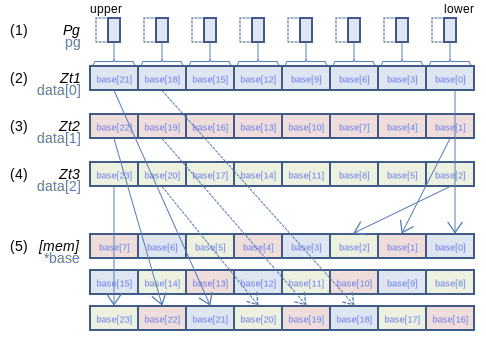
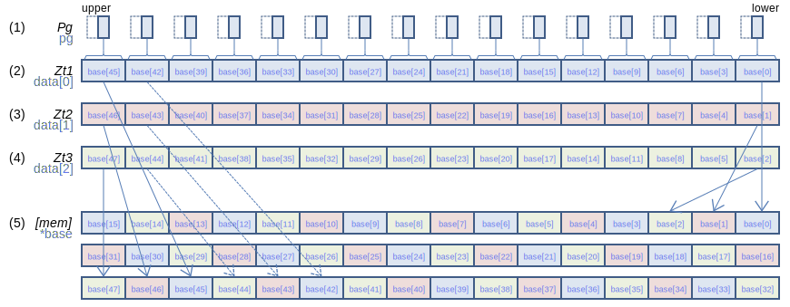
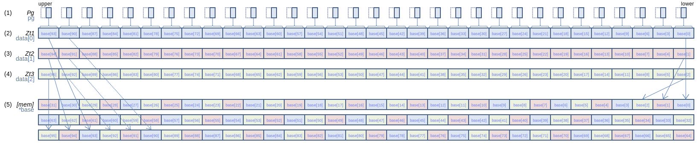
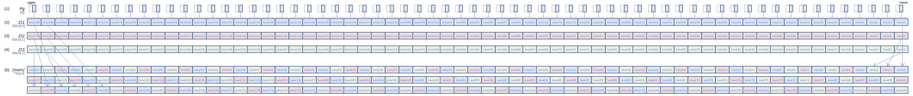
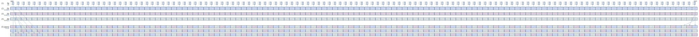

SVE Instruction List by Dougall Johnson
ST3H (scalar plus immediate): Contiguous store three-halfword structures from three vectors (immediate index)
ST3H { Zt1.H, Zt2.H, Zt3.H }, Pg, [Xn{, #imm, MUL VL}] (SVE (SME
void svst3_vnum[_bf16](svbool_t pg, bfloat16_t *base, int64_t vnum, svbfloat16x3_t data)
void svst3_vnum[_f16](svbool_t pg, float16_t *base, int64_t vnum, svfloat16x3_t data)
void svst3_vnum[_s16](svbool_t pg, int16_t *base, int64_t vnum, svint16x3_t data)
void svst3_vnum[_u16](svbool_t pg, uint16_t *base, int64_t vnum, svuint16x3_t data)
128-bit SVE
Interleave 16-bit elements from three consecutive registers (2), (3), and (4), and store them to the memory operand (5). If the predicate bit from (1) corresponding to an element in (2), (3), and (4) is zero, those three contiguous stores are skipped, and cannot cause a fault, and the corresponding values in memory are unchanged.
256-bit SVE
Interleave 16-bit elements from three consecutive registers (2), (3), and (4), and store them to the memory operand (5). If the predicate bit from (1) corresponding to an element in (2), (3), and (4) is zero, those three contiguous stores are skipped, and cannot cause a fault, and the corresponding values in memory are unchanged.
512-bit SVE
Interleave 16-bit elements from three consecutive registers (2), (3), and (4), and store them to the memory operand (5). If the predicate bit from (1) corresponding to an element in (2), (3), and (4) is zero, those three contiguous stores are skipped, and cannot cause a fault, and the corresponding values in memory are unchanged.
Larger sizes
1024-bit SVE
Interleave 16-bit elements from three consecutive registers (2), (3), and (4), and store them to the memory operand (5). If the predicate bit from (1) corresponding to an element in (2), (3), and (4) is zero, those three contiguous stores are skipped, and cannot cause a fault, and the corresponding values in memory are unchanged.
2048-bit SVE
Interleave 16-bit elements from three consecutive registers (2), (3), and (4), and store them to the memory operand (5). If the predicate bit from (1) corresponding to an element in (2), (3), and (4) is zero, those three contiguous stores are skipped, and cannot cause a fault, and the corresponding values in memory are unchanged.
Report mistakes or give feedback
Inspired by and based on the x86/x64 SIMD Instruction List by Daytime.